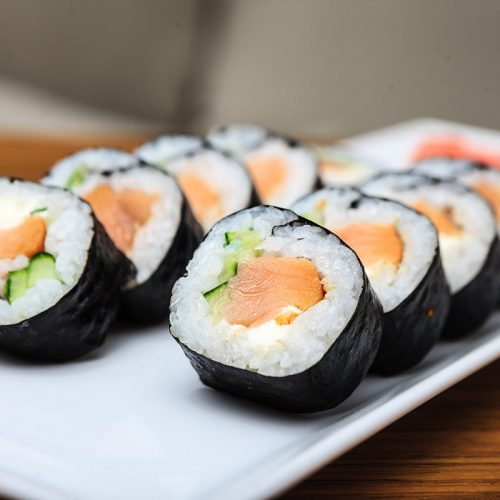
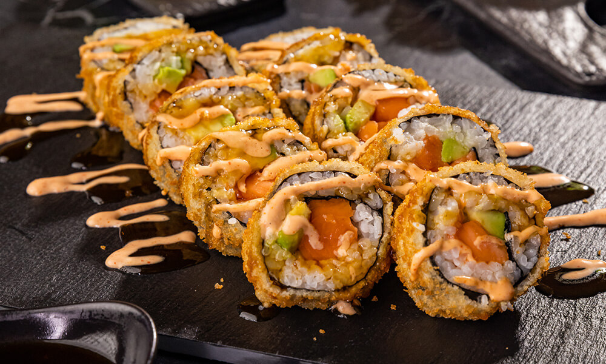

Salmon Roll
Ніжний рол з соковим лососем, обгорнутий у рис та норі. Його делікатний смак та яскравий колір роблять його класикою японської кухні, що підкорює серце з першого шматочка.

Ніжний рол з соковим лососем, обгорнутий у рис та норі. Його делікатний смак та яскравий колір роблять його класикою японської кухні, що підкорює серце з першого шматочка.

Популярний американський рол з соковитим крабом або крабовою паличкою, ніжним авокадо та хрустким огірком, загорнутий у рис та посипаний ікрою. Яскравий смак та насичений колір роблять його улюбленцем серед шанувальників суші.

Класичний рол з ніжним тунцем, загорнутий у тонкий шар норі та свіжого рису. Ідеально підійде для тих, хто цінує чистий смак свіжої риби та легку текстуру, що тане в роті.

Простий, але вишуканий рол з кремовим авокадо, загорнутим у м’який рис та норі. Ідеально підходить для вегетаріанців або тих, хто хоче легкий та свіжий перекус.

Класичний рол із ніжним лососем, вершковим сиром «Філадельфія» та свіжим огірком. Легкий, кремовий смак ідеально поєднується з рисом та норі.
Тонкий хосомакі з соковитим крабовим м’ясом, загорнутий у рис та лист норі. Простий і водночас насичений смак для поціновувачів мінімалізму.
Класичний хосомакі зі свіжим лососем. Ніжний, чистий смак риби гармонійно поєднується з рисом і норі.
Теплий рол із хрусткою темпурною скоринкою, ніжним лососем та кремовим авокадо. Ідеальний баланс текстур: хрумкий зовні та м’який всередині.
